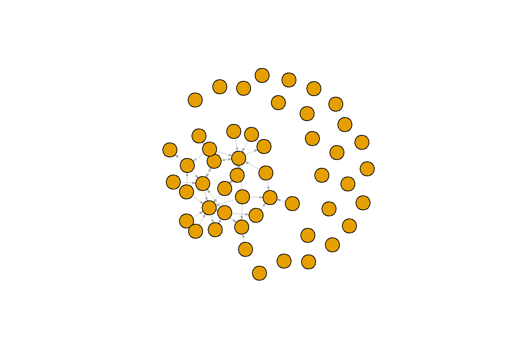

Data preparation
Niels Vullings
Last compiled on september, 2024
1 Set up
rm(list = ls())
# Libraries
library(data.table) # mainly for faster data handling
library(tidyverse) # I assume you already installed this one!
# install.packages('httr') # we don't need this for now require(httr) install.packages('xml2')
library(xml2)
# install.packages('rvest')
library(rvest)2 Load data
load("data/scholars_20240924.rda")
scholars <- x
rm(x)2.1 User function for Network data creation
About the parameters:
data: our scholars file university: Character vector with names of universities. We have several universities in the Netherlands. See above for relevant names.
discipline: Character vector, either sociology or political science or both. waves: a list of numeric vectors with start and end year of wave.
type: “first”: directed: first author sending to others “last”: directed: last author sending to others “all”: undirected: ties between all authors
Output: a list
$nets: array of nomination networks.
$data: sample of data (scholars)
fcolnet <- function(data = scholars, university = "RU", discipline = "sociology", waves = list(c(2015,
2018), c(2019, 2023)), type = c("first")) {
# step 1
demographics <- do.call(rbind.data.frame, data$demographics)
demographics <- demographics %>%
mutate(Universiteit1.22 = replace(Universiteit1.22, is.na(Universiteit1.22), ""), Universiteit2.22 = replace(Universiteit2.22,
is.na(Universiteit2.22), ""), Universiteit1.24 = replace(Universiteit1.24, is.na(Universiteit1.24),
""), Universiteit2.24 = replace(Universiteit2.24, is.na(Universiteit2.24), ""), discipline.22 = replace(discipline.22,
is.na(discipline.22), ""), discipline.24 = replace(discipline.24, is.na(discipline.24), ""))
sample <- which((demographics$Universiteit1.22 %in% university | demographics$Universiteit2.22 %in%
university | demographics$Universiteit1.24 %in% university | demographics$Universiteit2.24 %in%
university) & (demographics$discipline.22 %in% discipline | demographics$discipline.24 %in% discipline))
demographics_soc <- demographics[sample, ]
scholars_sel <- lapply(scholars, "[", sample)
# step 2
ids <- demographics_soc$au_id
nwaves <- length(waves)
nets <- array(0, dim = c(nwaves, length(ids), length(ids)), dimnames = list(wave = 1:nwaves, ids,
ids))
dimnames(nets)
# step 3
df_works <- tibble(works_id = unlist(lapply(scholars_sel$work, function(l) l$id)), works_author = unlist(lapply(scholars_sel$work,
function(l) l$author), recursive = FALSE), works_year = unlist(lapply(scholars_sel$work, function(l) l$publication_year),
recursive = FALSE))
df_works <- df_works[!duplicated(df_works), ]
# step 4
if (type == "first") {
for (j in 1:nwaves) {
df_works_w <- df_works[df_works$works_year >= waves[[j]][1] & df_works$works_year <= waves[[j]][2],
]
for (i in 1:nrow(df_works_w)) {
ego <- df_works_w$works_author[i][[1]]$au_id[1]
alters <- df_works_w$works_author[i][[1]]$au_id[-1]
if (sum(ids %in% ego) > 0 & sum(ids %in% alters) > 0) {
nets[j, which(ids %in% ego), which(ids %in% alters)] <- 1
}
}
}
}
if (type == "last") {
for (j in 1:nwaves) {
df_works_w <- df_works[df_works$works_year >= waves[[j]][1] & df_works$works_year <= waves[[j]][2],
]
for (i in 1:nrow(df_works_w)) {
ego <- rev(df_works_w$works_author[i][[1]]$au_id)[1]
alters <- rev(df_works_w$works_author[i][[1]]$au_id)[-1]
if (sum(ids %in% ego) > 0 & sum(ids %in% alters) > 0) {
nets[j, which(ids %in% ego), which(ids %in% alters)] <- 1
}
}
}
}
if (type == "all") {
for (j in 1:nwaves) {
df_works_w <- df_works[df_works$works_year >= waves[[j]][1] & df_works$works_year <= waves[[j]][2],
]
for (i in 1:nrow(df_works_w)) {
egos <- df_works_w$works_author[i][[1]]$au_id
if (sum(ids %in% egos) > 0) {
nets[j, which(ids %in% egos), which(ids %in% egos)] <- 1
}
}
}
}
output <- list()
output$data <- scholars_sel
output$nets <- nets
return(output)
}2.2 Testing
#save the output of your function
test <- fcolnet(data = scholars,
university = "RU",
discipline = "sociology",
waves = list(c(2015, 2018), c(2019, 2023)),
type = c("first"))
test_w1 <- igraph::graph_from_adjacency_matrix(
test$nets[1,,], #for this example I take the first wave of data. (thus I select the array of networks and take the first matrix)
mode = c("directed"),
weighted = NULL,
diag = FALSE,
add.colnames = NULL,
add.rownames = NULL
)
plot(test_w1,
vertex.label = NA,
edge.width = 0.2,
edge.arrow.size =0.2)
test <- fcolnet(data = scholars,
university = c("RU", "UU"),
discipline = c("sociology"),
waves = list(c(2015, 2018), c(2019, 2023)),
type = c("all"))
test_w2 <- igraph::graph_from_adjacency_matrix(
test$nets[2,,], #now, I take the second wave
mode = c("directed"),
weighted = NULL,
diag = FALSE,
add.colnames = NULL
)
#Let us find ego characteristics.
#first fish out the data
df <- test$data
#same complicated structure as 'scholars' thus first make a dataframe from the list in which all info was saved.
df_ego <- do.call(rbind.data.frame, df$demographics)
#DO NOT MESS UP THE ORDER! THUS IF YOU JOIN THIS DATA WITH YOUR OWN DATA CHECK THAT ORDER REMAINED THE SAME!!
plot(test_w2,
vertex.color = ifelse(df_ego$Universiteit.24 == "RU", "red", "blue"), #now, I can use actor attributes for plotting.
vertex.label = NA,
edge.width = 0.2,
edge.arrow.size =0.2)
LS0tDQp0aXRsZTogIkRhdGEgcHJlcGFyYXRpb24iDQojYmlibGlvZ3JhcGh5OiByZWZlcmVuY2VzLmJpYg0KYXV0aG9yOiAiTmllbHMgVnVsbGluZ3MiDQpiaWJsaW9ncmFwaHk6IHJlZmVyZW5jZXMuYmliDQotLS0NCg0KYGBgez1odG1sfQ0KPHN0eWxlPg0KYm9keSB7DQp0ZXh0LWFsaWduOiBqdXN0aWZ5fQ0KPC9zdHlsZT4NCmBgYA0KDQpgYGB7ciwgZ2xvYmFsc2V0dGluZ3MsIGVjaG89RkFMU0UsIHdhcm5pbmc9RkFMU0UsIHJlc3VsdHM9J2hpZGUnfQ0KbGlicmFyeShrbml0cikNCg0Ka25pdHI6Om9wdHNfY2h1bmskc2V0KGVjaG8gPSBUUlVFKQ0Kb3B0c19jaHVuayRzZXQodGlkeS5vcHRzPWxpc3Qod2lkdGguY3V0b2ZmPTEwMCksdGlkeT1UUlVFLCB3YXJuaW5nID0gRkFMU0UsIG1lc3NhZ2UgPSBGQUxTRSxjb21tZW50ID0gIiM+IiwgY2FjaGU9VFJVRSwgY2xhc3Muc291cmNlPWMoInRlc3QiKSwgY2xhc3Mub3V0cHV0PWMoInRlc3QyIikpDQpvcHRpb25zKHdpZHRoID0gMTAwKQ0KcmdsOjpzZXR1cEtuaXRyKCkNCg0KDQoNCmNvbG9yaXplIDwtIGZ1bmN0aW9uKHgsIGNvbG9yKSB7c3ByaW50ZigiPHNwYW4gc3R5bGU9J2NvbG9yOiAlczsnPiVzPC9zcGFuPiIsIGNvbG9yLCB4KSB9DQoNCmBgYA0KDQpgYGB7ciBrbGlwcHksIGVjaG89RkFMU0UsIGluY2x1ZGU9VFJVRX0NCmtsaXBweTo6a2xpcHB5KHBvc2l0aW9uID0gYygndG9wJywgJ3JpZ2h0JykpDQojIGtsaXBweTo6a2xpcHB5KGNvbG9yID0gJ2RhcmtncmVlbicpDQoja2xpcHB5OjprbGlwcHkodG9vbHRpcF9tZXNzYWdlID0gJ0NsaWNrIHRvIGNvcHknLCB0b29sdGlwX3N1Y2Nlc3MgPSAnRG9uZScpDQpgYGANCg0KTGFzdCBjb21waWxlZCBvbiBgciBmb3JtYXQoU3lzLnRpbWUoKSwgJyVCLCAlWScpYA0KDQo8YnI+DQoNCi0tLS0tLS0tLS0tLS0tLS0tLS0tLS0tLS0tLS0tLS0tLS0tLS0tLS0tLS0tLS0tLS0tLS0tLS0tLS0tLS0tLS0tLS0tLS0tLQ0KDQojIFNldCB1cA0KDQpgYGB7cn0NCnJtKGxpc3QgPSBscygpKQ0KDQojIExpYnJhcmllcw0KbGlicmFyeShkYXRhLnRhYmxlKSAgIyBtYWlubHkgZm9yIGZhc3RlciBkYXRhIGhhbmRsaW5nDQpsaWJyYXJ5KHRpZHl2ZXJzZSkgICMgSSBhc3N1bWUgeW91IGFscmVhZHkgaW5zdGFsbGVkIHRoaXMgb25lIQ0KIyBpbnN0YWxsLnBhY2thZ2VzKCdodHRyJykgIyB3ZSBkb24ndCBuZWVkIHRoaXMgZm9yIG5vdyByZXF1aXJlKGh0dHIpDQojIGluc3RhbGwucGFja2FnZXMoInhtbDIiKQ0KbGlicmFyeSh4bWwyKQ0KIyBpbnN0YWxsLnBhY2thZ2VzKCJydmVzdCIpDQpsaWJyYXJ5KHJ2ZXN0KQ0KDQpgYGANCg0KIyBMb2FkIGRhdGENCg0KYGBge3J9DQpsb2FkKCJkYXRhL3NjaG9sYXJzXzIwMjQwOTI0LnJkYSIpDQpzY2hvbGFycyA8LSB4DQpybSh4KQ0KDQpgYGANCg0KIyMgVXNlciBmdW5jdGlvbiBmb3IgTmV0d29yayBkYXRhIGNyZWF0aW9uDQoNCkFib3V0IHRoZSBwYXJhbWV0ZXJzOg0KDQpkYXRhOiBvdXIgc2Nob2xhcnMgZmlsZSB1bml2ZXJzaXR5OiBDaGFyYWN0ZXIgdmVjdG9yIHdpdGggbmFtZXMgb2YgdW5pdmVyc2l0aWVzLiBXZSBoYXZlIHNldmVyYWwgdW5pdmVyc2l0aWVzIGluIHRoZSBOZXRoZXJsYW5kcy4gU2VlIGFib3ZlIGZvciByZWxldmFudCBuYW1lcy4NCg0KZGlzY2lwbGluZTogQ2hhcmFjdGVyIHZlY3RvciwgZWl0aGVyIHNvY2lvbG9neSBvciBwb2xpdGljYWwgc2NpZW5jZSBvciBib3RoLiB3YXZlczogYSBsaXN0IG9mIG51bWVyaWMgdmVjdG9ycyB3aXRoIHN0YXJ0IGFuZCBlbmQgeWVhciBvZiB3YXZlLg0KDQp0eXBlOiAiZmlyc3QiOiBkaXJlY3RlZDogZmlyc3QgYXV0aG9yIHNlbmRpbmcgdG8gb3RoZXJzICJsYXN0IjogZGlyZWN0ZWQ6IGxhc3QgYXV0aG9yIHNlbmRpbmcgdG8gb3RoZXJzICJhbGwiOiB1bmRpcmVjdGVkOiB0aWVzIGJldHdlZW4gYWxsIGF1dGhvcnMNCg0KT3V0cHV0OiBhIGxpc3QNCg0KLSAgIFwkbmV0czogYXJyYXkgb2Ygbm9taW5hdGlvbiBuZXR3b3Jrcy4NCg0KLSAgIFwkZGF0YTogc2FtcGxlIG9mIGRhdGEgKHNjaG9sYXJzKQ0KDQpgYGB7cn0NCmZjb2xuZXQgPC0gZnVuY3Rpb24oZGF0YSA9IHNjaG9sYXJzLCB1bml2ZXJzaXR5ID0gIlJVIiwgZGlzY2lwbGluZSA9ICJzb2Npb2xvZ3kiLCB3YXZlcyA9IGxpc3QoYygyMDE1LA0KICAgICAgICAgICAgICAgICAgICAgICAgICAgICAgICAgICAgICAgICAgICAgICAgICAgICAgICAgICAgICAgICAgICAgICAgICAgICAgICAgICAgICAgICAgICAgICAgIDIwMTgpLCBjKDIwMTksIDIwMjMpKSwgdHlwZSA9IGMoImZpcnN0IikpIHsNCiAgDQogICMgc3RlcCAxDQogIGRlbW9ncmFwaGljcyA8LSBkby5jYWxsKHJiaW5kLmRhdGEuZnJhbWUsIGRhdGEkZGVtb2dyYXBoaWNzKQ0KICBkZW1vZ3JhcGhpY3MgPC0gZGVtb2dyYXBoaWNzICU+JQ0KICAgIG11dGF0ZShVbml2ZXJzaXRlaXQxLjIyID0gcmVwbGFjZShVbml2ZXJzaXRlaXQxLjIyLCBpcy5uYShVbml2ZXJzaXRlaXQxLjIyKSwgIiIpLCBVbml2ZXJzaXRlaXQyLjIyID0gcmVwbGFjZShVbml2ZXJzaXRlaXQyLjIyLA0KICAgICAgICAgICAgICAgICAgICAgICAgICAgICAgICAgICAgICAgICAgICAgICAgICAgICAgICAgICAgICAgICAgICAgICAgICAgICAgICAgICAgICAgICAgICAgICAgICAgICAgICAgICAgICAgICBpcy5uYShVbml2ZXJzaXRlaXQyLjIyKSwgIiIpLCBVbml2ZXJzaXRlaXQxLjI0ID0gcmVwbGFjZShVbml2ZXJzaXRlaXQxLjI0LCBpcy5uYShVbml2ZXJzaXRlaXQxLjI0KSwNCiAgICAgICAgICAgICAgICAgICAgICAgICAgICAgICAgICAgICAgICAgICAgICAgICAgICAgICAgICAgICAgICAgICAgICAgICAgICAgICAgICAgICAgICAgICAgICAgICAgICAgICAgICAgICAgICAgICAgICAgICAgICAgICAgICAgICAgICAgICAgICAgICAgICAgICAgICAgICAgICAgICAgICAgICAgIiIpLCBVbml2ZXJzaXRlaXQyLjI0ID0gcmVwbGFjZShVbml2ZXJzaXRlaXQyLjI0LCBpcy5uYShVbml2ZXJzaXRlaXQyLjI0KSwgIiIpLCBkaXNjaXBsaW5lLjIyID0gcmVwbGFjZShkaXNjaXBsaW5lLjIyLA0KICAgICAgICAgICAgICAgICAgICAgICAgICAgICAgICAgICAgICAgICAgICAgICAgICAgICAgICAgICAgICAgICAgICAgICAgICAgICAgICAgICAgICAgICAgICAgICAgICAgICAgICAgICAgICAgICAgICAgICAgICAgICAgICAgICAgICAgICAgICAgICAgICAgICAgICAgICAgICAgICAgICAgICAgICAgICAgICAgICAgICAgICAgICAgICAgICAgICAgICAgICAgICAgICAgICAgICAgICAgICAgICAgICAgICAgICAgICAgICAgICAgICAgICAgICAgICAgICAgICAgICAgICAgICAgICAgIGlzLm5hKGRpc2NpcGxpbmUuMjIpLCAiIiksIGRpc2NpcGxpbmUuMjQgPSByZXBsYWNlKGRpc2NpcGxpbmUuMjQsIGlzLm5hKGRpc2NpcGxpbmUuMjQpLCAiIikpDQogIA0KICBzYW1wbGUgPC0gd2hpY2goKGRlbW9ncmFwaGljcyRVbml2ZXJzaXRlaXQxLjIyICVpbiUgdW5pdmVyc2l0eSB8IGRlbW9ncmFwaGljcyRVbml2ZXJzaXRlaXQyLjIyICVpbiUNCiAgICAgICAgICAgICAgICAgICAgIHVuaXZlcnNpdHkgfCBkZW1vZ3JhcGhpY3MkVW5pdmVyc2l0ZWl0MS4yNCAlaW4lIHVuaXZlcnNpdHkgfCBkZW1vZ3JhcGhpY3MkVW5pdmVyc2l0ZWl0Mi4yNCAlaW4lDQogICAgICAgICAgICAgICAgICAgICB1bml2ZXJzaXR5KSAmIChkZW1vZ3JhcGhpY3MkZGlzY2lwbGluZS4yMiAlaW4lIGRpc2NpcGxpbmUgfCBkZW1vZ3JhcGhpY3MkZGlzY2lwbGluZS4yNCAlaW4lIGRpc2NpcGxpbmUpKQ0KICANCiAgZGVtb2dyYXBoaWNzX3NvYyA8LSBkZW1vZ3JhcGhpY3Nbc2FtcGxlLCBdDQogIHNjaG9sYXJzX3NlbCA8LSBsYXBwbHkoc2Nob2xhcnMsICJbIiwgc2FtcGxlKQ0KICANCiAgIyBzdGVwIDINCiAgaWRzIDwtIGRlbW9ncmFwaGljc19zb2MkYXVfaWQNCiAgbndhdmVzIDwtIGxlbmd0aCh3YXZlcykNCiAgbmV0cyA8LSBhcnJheSgwLCBkaW0gPSBjKG53YXZlcywgbGVuZ3RoKGlkcyksIGxlbmd0aChpZHMpKSwgZGltbmFtZXMgPSBsaXN0KHdhdmUgPSAxOm53YXZlcywgaWRzLA0KICAgICAgICAgICAgICAgICAgICAgICAgICAgICAgICAgICAgICAgICAgICAgICAgICAgICAgICAgICAgICAgICAgICAgICAgICAgICAgaWRzKSkNCiAgZGltbmFtZXMobmV0cykNCiAgDQogICMgc3RlcCAzDQogIGRmX3dvcmtzIDwtIHRpYmJsZSh3b3Jrc19pZCA9IHVubGlzdChsYXBwbHkoc2Nob2xhcnNfc2VsJHdvcmssIGZ1bmN0aW9uKGwpIGwkaWQpKSwgd29ya3NfYXV0aG9yID0gdW5saXN0KGxhcHBseShzY2hvbGFyc19zZWwkd29yaywNCiAgICAgICAgICAgICAgICAgICAgICAgICAgICAgICAgICAgICAgICAgICAgICAgICAgICAgICAgICAgICAgICAgICAgICAgICAgICAgICAgICAgICAgICAgICAgICAgICAgICAgICAgICAgICAgICAgIGZ1bmN0aW9uKGwpIGwkYXV0aG9yKSwgcmVjdXJzaXZlID0gRkFMU0UpLCB3b3Jrc195ZWFyID0gdW5saXN0KGxhcHBseShzY2hvbGFyc19zZWwkd29yaywgZnVuY3Rpb24obCkgbCRwdWJsaWNhdGlvbl95ZWFyKSwNCiAgICAgICAgICAgICAgICAgICAgICAgICAgICAgICAgICAgICAgICAgICAgICAgICAgICAgICAgICAgICAgICAgICAgICAgICAgICAgICAgICAgICAgICAgICAgICAgICAgICAgICAgICAgICAgICAgICAgICAgICAgICAgICAgICAgICAgICAgICAgICAgICAgICAgICAgICAgICAgICAgICAgICAgICAgICAgICAgIHJlY3Vyc2l2ZSA9IEZBTFNFKSkNCiAgDQogIGRmX3dvcmtzIDwtIGRmX3dvcmtzWyFkdXBsaWNhdGVkKGRmX3dvcmtzKSwgXQ0KICANCiAgIyBzdGVwIDQNCiAgaWYgKHR5cGUgPT0gImZpcnN0Iikgew0KICAgIGZvciAoaiBpbiAxOm53YXZlcykgew0KICAgICAgZGZfd29ya3NfdyA8LSBkZl93b3Jrc1tkZl93b3JrcyR3b3Jrc195ZWFyID49IHdhdmVzW1tqXV1bMV0gJiBkZl93b3JrcyR3b3Jrc195ZWFyIDw9IHdhdmVzW1tqXV1bMl0sDQogICAgICBdDQogICAgICBmb3IgKGkgaW4gMTpucm93KGRmX3dvcmtzX3cpKSB7DQogICAgICAgIGVnbyA8LSBkZl93b3Jrc193JHdvcmtzX2F1dGhvcltpXVtbMV1dJGF1X2lkWzFdDQogICAgICAgIGFsdGVycyA8LSBkZl93b3Jrc193JHdvcmtzX2F1dGhvcltpXVtbMV1dJGF1X2lkWy0xXQ0KICAgICAgICBpZiAoc3VtKGlkcyAlaW4lIGVnbykgPiAwICYgc3VtKGlkcyAlaW4lIGFsdGVycykgPiAwKSB7DQogICAgICAgICAgbmV0c1tqLCB3aGljaChpZHMgJWluJSBlZ28pLCB3aGljaChpZHMgJWluJSBhbHRlcnMpXSA8LSAxDQogICAgICAgIH0NCiAgICAgIH0NCiAgICB9DQogIH0NCiAgDQogIGlmICh0eXBlID09ICJsYXN0Iikgew0KICAgIGZvciAoaiBpbiAxOm53YXZlcykgew0KICAgICAgZGZfd29ya3NfdyA8LSBkZl93b3Jrc1tkZl93b3JrcyR3b3Jrc195ZWFyID49IHdhdmVzW1tqXV1bMV0gJiBkZl93b3JrcyR3b3Jrc195ZWFyIDw9IHdhdmVzW1tqXV1bMl0sDQogICAgICBdDQogICAgICBmb3IgKGkgaW4gMTpucm93KGRmX3dvcmtzX3cpKSB7DQogICAgICAgIGVnbyA8LSByZXYoZGZfd29ya3NfdyR3b3Jrc19hdXRob3JbaV1bWzFdXSRhdV9pZClbMV0NCiAgICAgICAgYWx0ZXJzIDwtIHJldihkZl93b3Jrc193JHdvcmtzX2F1dGhvcltpXVtbMV1dJGF1X2lkKVstMV0NCiAgICAgICAgaWYgKHN1bShpZHMgJWluJSBlZ28pID4gMCAmIHN1bShpZHMgJWluJSBhbHRlcnMpID4gMCkgew0KICAgICAgICAgIG5ldHNbaiwgd2hpY2goaWRzICVpbiUgZWdvKSwgd2hpY2goaWRzICVpbiUgYWx0ZXJzKV0gPC0gMQ0KICAgICAgICB9DQogICAgICB9DQogICAgfQ0KICB9DQogIA0KICBpZiAodHlwZSA9PSAiYWxsIikgew0KICAgIGZvciAoaiBpbiAxOm53YXZlcykgew0KICAgICAgZGZfd29ya3NfdyA8LSBkZl93b3Jrc1tkZl93b3JrcyR3b3Jrc195ZWFyID49IHdhdmVzW1tqXV1bMV0gJiBkZl93b3JrcyR3b3Jrc195ZWFyIDw9IHdhdmVzW1tqXV1bMl0sDQogICAgICBdDQogICAgICBmb3IgKGkgaW4gMTpucm93KGRmX3dvcmtzX3cpKSB7DQogICAgICAgIGVnb3MgPC0gZGZfd29ya3NfdyR3b3Jrc19hdXRob3JbaV1bWzFdXSRhdV9pZA0KICAgICAgICBpZiAoc3VtKGlkcyAlaW4lIGVnb3MpID4gMCkgew0KICAgICAgICAgIG5ldHNbaiwgd2hpY2goaWRzICVpbiUgZWdvcyksIHdoaWNoKGlkcyAlaW4lIGVnb3MpXSA8LSAxDQogICAgICAgIH0NCiAgICAgIH0NCiAgICB9DQogIH0NCiAgb3V0cHV0IDwtIGxpc3QoKQ0KICBvdXRwdXQkZGF0YSA8LSBzY2hvbGFyc19zZWwNCiAgb3V0cHV0JG5ldHMgPC0gbmV0cw0KICByZXR1cm4ob3V0cHV0KQ0KfQ0KYGBgDQoNCiMjIFRlc3RpbmcNCg0KYGBge3J9DQojc2F2ZSB0aGUgb3V0cHV0IG9mIHlvdXIgZnVuY3Rpb24NCnRlc3QgPC0gZmNvbG5ldChkYXRhID0gc2Nob2xhcnMsIA0KICAgICAgICAgICAgICAgIHVuaXZlcnNpdHkgPSAiUlUiLCANCiAgICAgICAgICAgICAgICBkaXNjaXBsaW5lID0gInNvY2lvbG9neSIsIA0KICAgICAgICAgICAgICAgIHdhdmVzID0gbGlzdChjKDIwMTUsIDIwMTgpLCBjKDIwMTksIDIwMjMpKSwgDQogICAgICAgICAgICAgICAgdHlwZSA9IGMoImZpcnN0IikpDQoNCg0KDQoNCnRlc3RfdzEgPC0gaWdyYXBoOjpncmFwaF9mcm9tX2FkamFjZW5jeV9tYXRyaXgoDQogIHRlc3QkbmV0c1sxLCxdLCAjZm9yIHRoaXMgZXhhbXBsZSBJIHRha2UgdGhlIGZpcnN0IHdhdmUgb2YgZGF0YS4gKHRodXMgSSBzZWxlY3QgdGhlIGFycmF5IG9mIG5ldHdvcmtzIGFuZCB0YWtlIHRoZSBmaXJzdCBtYXRyaXgpDQogIG1vZGUgPSBjKCJkaXJlY3RlZCIpLA0KICB3ZWlnaHRlZCA9IE5VTEwsDQogIGRpYWcgPSBGQUxTRSwNCiAgYWRkLmNvbG5hbWVzID0gTlVMTCwNCiAgYWRkLnJvd25hbWVzID0gTlVMTA0KKQ0KDQpwbG90KHRlc3RfdzEsDQogICAgIHZlcnRleC5sYWJlbCA9IE5BLA0KICAgICBlZGdlLndpZHRoID0gMC4yLA0KICAgICBlZGdlLmFycm93LnNpemUgPTAuMikNCmBgYA0KDQpgYGB7cn0NCnRlc3QgPC0gZmNvbG5ldChkYXRhID0gc2Nob2xhcnMsIA0KICAgICAgICAgICAgICAgIHVuaXZlcnNpdHkgPSBjKCJSVSIsICJVVSIpLCANCiAgICAgICAgICAgICAgICBkaXNjaXBsaW5lID0gYygic29jaW9sb2d5IiksIA0KICAgICAgICAgICAgICAgIHdhdmVzID0gbGlzdChjKDIwMTUsIDIwMTgpLCBjKDIwMTksIDIwMjMpKSwgDQogICAgICAgICAgICAgICAgdHlwZSA9IGMoImFsbCIpKQ0KDQp0ZXN0X3cyIDwtIGlncmFwaDo6Z3JhcGhfZnJvbV9hZGphY2VuY3lfbWF0cml4KA0KICB0ZXN0JG5ldHNbMiwsXSwgI25vdywgSSB0YWtlIHRoZSBzZWNvbmQgd2F2ZQ0KICBtb2RlID0gYygiZGlyZWN0ZWQiKSwNCiAgd2VpZ2h0ZWQgPSBOVUxMLA0KICBkaWFnID0gRkFMU0UsDQogIGFkZC5jb2xuYW1lcyA9IE5VTEwNCikNCg0KI0xldCB1cyBmaW5kIGVnbyBjaGFyYWN0ZXJpc3RpY3MuIA0KI2ZpcnN0IGZpc2ggb3V0IHRoZSBkYXRhDQpkZiA8LSB0ZXN0JGRhdGENCg0KI3NhbWUgY29tcGxpY2F0ZWQgc3RydWN0dXJlIGFzICdzY2hvbGFycycgdGh1cyBmaXJzdCBtYWtlIGEgZGF0YWZyYW1lIGZyb20gdGhlIGxpc3QgaW4gd2hpY2ggYWxsIGluZm8gd2FzIHNhdmVkLiANCmRmX2VnbyA8LSBkby5jYWxsKHJiaW5kLmRhdGEuZnJhbWUsIGRmJGRlbW9ncmFwaGljcykNCiNETyBOT1QgTUVTUyBVUCBUSEUgT1JERVIhIFRIVVMgSUYgWU9VIEpPSU4gVEhJUyBEQVRBIFdJVEggWU9VUiBPV04gREFUQSBDSEVDSyBUSEFUIE9SREVSIFJFTUFJTkVEIFRIRSBTQU1FISEgDQoNCnBsb3QodGVzdF93MiwNCiAgICAgdmVydGV4LmNvbG9yID0gaWZlbHNlKGRmX2VnbyRVbml2ZXJzaXRlaXQuMjQgPT0gIlJVIiwgInJlZCIsICJibHVlIiksICNub3csIEkgY2FuIHVzZSBhY3RvciBhdHRyaWJ1dGVzIGZvciBwbG90dGluZy4gDQogICAgIHZlcnRleC5sYWJlbCA9IE5BLA0KICAgICBlZGdlLndpZHRoID0gMC4yLA0KICAgICBlZGdlLmFycm93LnNpemUgPTAuMikNCmBgYA0KDQo8YnI+DQoNCi0tLS0tLS0tLS0tLS0tLS0tLS0tLS0tLS0tLS0tLS0tLS0tLS0tLS0tLS0tLS0tLS0tLS0tLS0tLS0tLS0tLS0tLS0tLS0tLQ0K